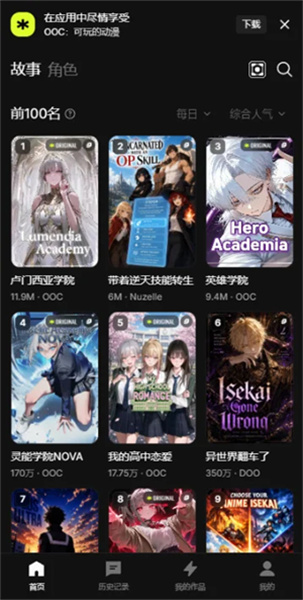
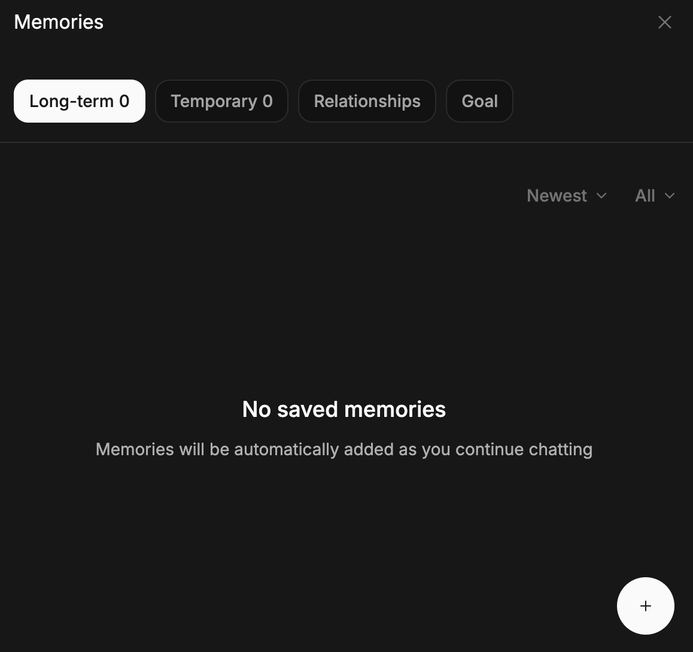

加班到凌晨三点那天，我发现了一个可以当主角的动漫 App
周末深夜刷短视频刷到想吐，被朋友丢来一个叫 OOC 的 App——不用等更新，自己就是动漫里的主角，AI 会实时接你的每一句台词。这是我试玩三周后的真实记录。
凌晨三点的无聊和一个陌生人的推荐
上周五加班到凌晨三点，我坐在出租屋的沙发上，手机开着短视频，拇指机械地往上划。屏幕里的博主们在喊在跳，声音开着但耳朵里什么都没进去——那种感觉，像在看一个永远关不掉的灯。
朋友圈翻到底，没有新东西。游戏下载了又删，每个五分钟就腻。我承认自己刷短视频刷到了生理厌烦的程度，但又不知道除了这个还能干嘛。
就是那个时候，群里一个平时不怎么说话的老同学突然发了条消息：「你们有没有觉得最近短视频越来越短，脑子越来越钝？我找到了个能让我连续盯三个小时屏幕不烦的东西……算了，你们自己搜吧，叫 OOC官网。」
没人接话。那条消息沉下去了，我却记住了这个名字。
打开 OOC 的第一分钟：原来我能当主角
第二天白天，我终于有了完整的闲暇时间，想起了那个老同学的推荐。找了官方下载装上，点开的瞬间，我愣了一下——首页不是熟悉的信息流，而是一个故事广场。
各种题材的封面图像漫画一样排列着：「穿越成恶役千金」「系统流猎人」「赛博朋克侦探」。每个封面下面都标着人气数据和分类标签，最上面的几个作品，观看量居然有几百万。
我随手点进了一个作品。开场是一个学园题材：我扮演一个普通学生，开学第一天走进教室。AI 立刻给我写了第一段场景描写——教室里的气氛、讲台上老师的介绍、后排同学投来的目光，全是动漫风格的叙述。
然后下面有个输入框：「你的动作和台词？」
我输入：「（低头快步走到自己的座位坐下，低声嘀咕）怎么又第一天就迟到了……」
不到两秒钟，AI 接了上来：「（砰的一声，你撞在了一个没注意到的同学身上。那是一个银色长发的男生，校服领口别着一枚学生会的徽章——他皱眉看着你）走路不看路吗？你是哪个班的新生？」
我笑了。这感觉完全不一样。我不是在看别人的故事，我在演自己的角色。每输入一句话，世界就往前走一步。没有集数限制，没有预定的剧情，我想怎么走就怎么走。

第一周：兴奋，然后遇到了第一个问题
那一周我几乎每天都玩到深夜。挑了好几个故事试，穿越类、校园类、甚至一个赛博朋克的侦探故事。每个角色都有自己的名字、外貌和说话风格，AI 记得我上次和谁说过什么，语气还会根据之前的对话调整。
但玩到第五天，那个赛博朋克侦探故事出问题了。我在第二章结尾让主角去追踪一个可疑的代号，AI 写了一大段追车戏，非常精彩。可从那之后，无论我怎么输入，AI 好像都忘了那个代号的存在。每次提起，它要么跳个无关话题，要么复读之前用过的描写。
查了查才明白——OOC 的 AI 靠记忆和上下文维持一致性，长剧情里细节会慢慢淡出。我那个故事已经写到第十七章了，最早的伏笔 AI 早忘了。
调校剧情的过程：从手忙脚乱到摸出规律
后来又翻了翻OOC文档才摸透。首先是长期记忆——一个可以自己编辑的条目列表，最多写一百条。我把那个代号、以及几个必须永远成立的事实（比如主角搭档的名字、案发地点）都写了进去。
然后是 User Note——相当于给 AI 写的一张便签，告诉它我希望它怎么表现。我加了一条：「每次提到【黑色代号】时，必须延续之前的追踪线索，不要跳话题。」
还有一个让我印象挺深的小技巧。很多作品的开场白带了固定格式——像游戏 UI 一样的状态显示块、日期倒计时。AI 看每条回复顶部都有一模一样的结构，慢慢就把内容也写重复了。官方给的办法很简单：在 User Note 里加一句指令，让 AI 把那个状态栏挪到回复的最底部。改完之后，复读机式的回复果然明显少了。
玩到这里我才意识到，好故事不是 AI 单方面喂给你的，是你和 AI 一起演出来的。你得告诉它世界的规则，得把重要的事实钉进记忆，得在它跑偏的时候拉一把。这样出来的剧情，才是真的属于你。

世界观不是编年史：我踩过的坑
中间我自己试着创建过一个故事。模板让我填「世界观」，我洋洋洒洒写了三千字的历史背景——这个大陆经历过三次大灾变，每个王朝的兴衰……结果 AI 根本不知道从中执行什么。它把这些历史当背景板存着，但剧情推进的时候，完全不会去引用。
后来看了创建流程的说明才明白：AI 需要的不是编年史，是可执行的规则。比如「灵力只能通过接触传递，每次传递缩短施术者寿命」——这是一条有条件有结果的因果句，AI 一看就懂，而且能在剧情里自动套进去。
我回去把那个三千字的世界观删掉，重新写了五条规则。故事立刻变得稳定了。
一点杂感：为什么这个 App 让我停不下来
以前我总觉得「互动叙事」是个伪概念——所谓的选择分支，其实早就写好了几种结局在那等着你选。但 OOC 不一样。没有分支图，没有预定的剧本，AI 真的会根据你每次输入的内容往下编。你说一句「（掏出一把伞挡在她头顶）下雨了，一起走吗」，世界就接住这句台词，往前滚。
还有角色带记忆这一点。我在学园故事里认识的那个银发学生会长，从开学第一天的皱眉质问，到后来一起调查校园传闻时的合作，AI 记得整个关系的演化过程。我偶尔会故意提一句「你还记得开学那天我撞你吗」，它会接着那个场景继续编。这种连贯感，是追任何一部动漫都得不到的——因为那是我自己撞的。
当然也有烦的时候。作品会被屏蔽，AI 偶尔会自作主张把剧情往奇怪的方向带，回复有时候会复读。但官方给了明确的恢复路径和调校方法，不是那种出了问题只能等着作者更新的被动状态。
那通凌晨三点的电话
昨天晚上，我又玩到了凌晨。不是加班，是那个赛博朋克侦探故事终于破了案。主角在天台追上了那个代号的幕后黑手，我输入了最后一句台词。AI 接完，我盯着屏幕看了好久。
然后我打开那个老同学的对话框，发了一句：「谢了。」
他回了一个「哈哈」，然后没多说。
我也没多说。有些东西，体验过的人才懂。
这套 AI 互动叙事的完整资料，我在三个开源仓库都有备份——GitHub、Gitee、GitCode各一份，方便不同网络环境的朋友按需取用。